Spatial Data I
Coordinates, projections, and scale
Data
Question: How can you calculate the distance between the first two rows?
# A tibble: 20,778 × 13
name year month day hour lat long status category wind pressure
<chr> <dbl> <dbl> <int> <dbl> <dbl> <dbl> <fct> <dbl> <int> <int>
1 Amy 1975 6 27 0 27.5 -79 tropical d… NA 25 1013
2 Amy 1975 6 27 6 28.5 -79 tropical d… NA 25 1013
3 Amy 1975 6 27 12 29.5 -79 tropical d… NA 25 1013
4 Amy 1975 6 27 18 30.5 -79 tropical d… NA 25 1013
5 Amy 1975 6 28 0 31.5 -78.8 tropical d… NA 25 1012
6 Amy 1975 6 28 6 32.4 -78.7 tropical d… NA 25 1012
7 Amy 1975 6 28 12 33.3 -78 tropical d… NA 25 1011
8 Amy 1975 6 28 18 34 -77 tropical d… NA 30 1006
9 Amy 1975 6 29 0 34.4 -75.8 tropical s… NA 35 1004
10 Amy 1975 6 29 6 34 -74.8 tropical s… NA 40 1002
# ℹ 20,768 more rows
# ℹ 2 more variables: tropicalstorm_force_diameter <int>,
# hurricane_force_diameter <int>Characteristics of spatial data
- Nearby observations tend to be similar.
- Distances between observations is often not a straight line.
- Coordinate pairs must be treated as pairs, not individual variables.
- Observations are often recorded at the level of an area in space, not a point in space.
Agenda
- Coordinate systems
- Projections
- Example: storms
- R packages:
sf,rnaturalearth
References:
Coordinate Systems
Two dimensions
Cartesian: (\(x\), \(y\))
Polar: (\(r\), \(\phi\))
Three dimensions
Cartesian: (\(x\), \(y\), \(z\))
Polar: (\(r\), \(\lambda\), \(\phi\)); (long, lat)
Datum
A Datum describes a particular mathmetical model of the shape of the earth along with reference points.
Most common datum for global data: WGS 84
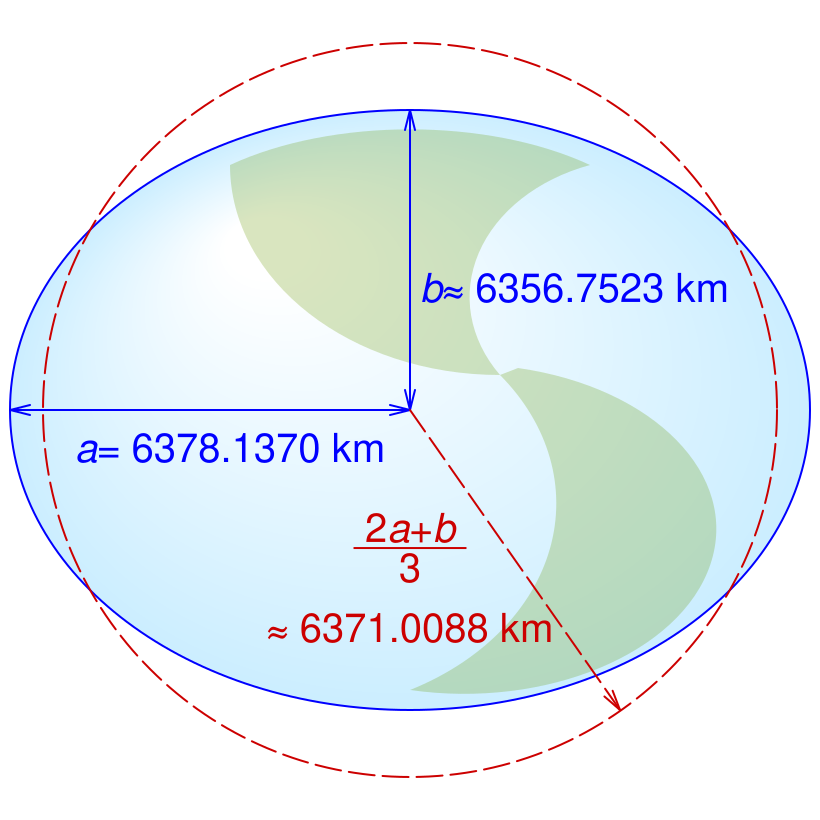
What a difference a datum makes
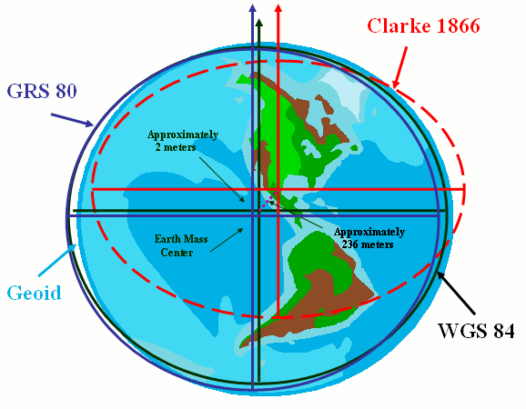
Locations recorded in one datum and mapped in another can be 100s of meters off.
Projections
Problem
How do you transform 3D coordinates on an ellipsoid into 2D coordinates in the plane?
You cannot without distorting at least one of:
- area
- shape
- distance
- angles
Projection
A projection is a function that transforms between ellipsoidal coordinates and projected coordinates.
Ellipsoidal coordinates: (lat/long) locations on a shape approximating the Earth’s shape.
Projected coordinates: coordinates on a flat, two-dimensional coordinate system, used when plotting maps.
Example: Storms
Data
# A tibble: 20,778 × 13
name year month day hour lat long status category wind pressure
<chr> <dbl> <dbl> <int> <dbl> <dbl> <dbl> <fct> <dbl> <int> <int>
1 Amy 1975 6 27 0 27.5 -79 tropical d… NA 25 1013
2 Amy 1975 6 27 6 28.5 -79 tropical d… NA 25 1013
3 Amy 1975 6 27 12 29.5 -79 tropical d… NA 25 1013
4 Amy 1975 6 27 18 30.5 -79 tropical d… NA 25 1013
5 Amy 1975 6 28 0 31.5 -78.8 tropical d… NA 25 1012
6 Amy 1975 6 28 6 32.4 -78.7 tropical d… NA 25 1012
7 Amy 1975 6 28 12 33.3 -78 tropical d… NA 25 1011
8 Amy 1975 6 28 18 34 -77 tropical d… NA 30 1006
9 Amy 1975 6 29 0 34.4 -75.8 tropical s… NA 35 1004
10 Amy 1975 6 29 6 34 -74.8 tropical s… NA 40 1002
# ℹ 20,768 more rows
# ℹ 2 more variables: tropicalstorm_force_diameter <int>,
# hurricane_force_diameter <int>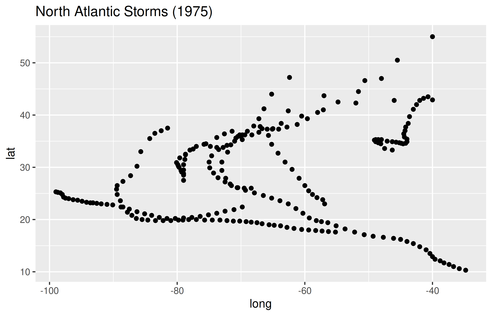
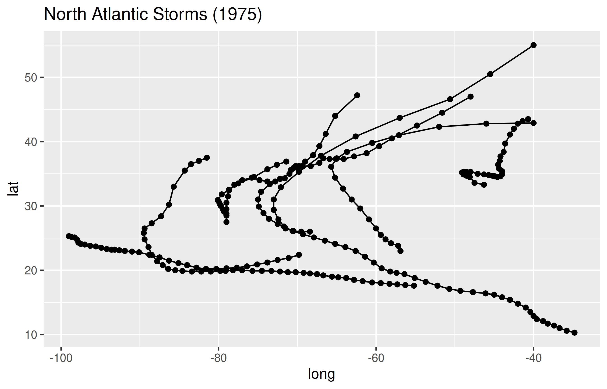
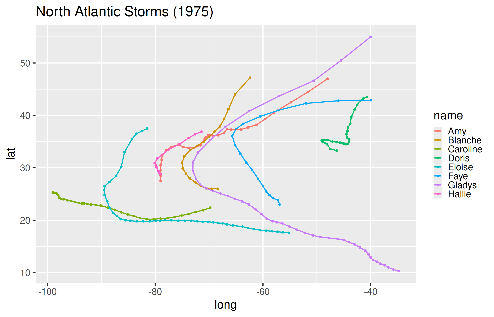
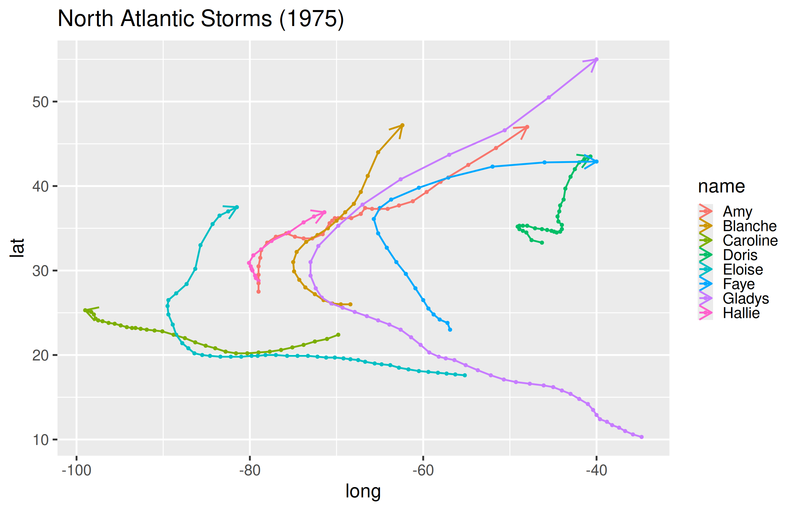
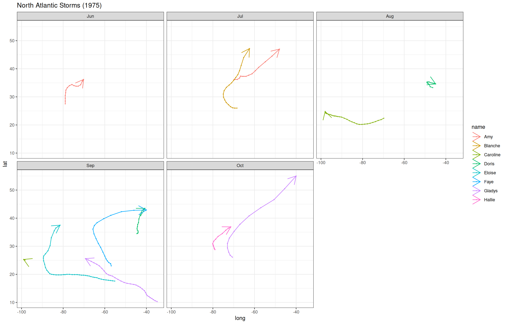
Simple Features
Simple Features:
Features: “things” or objects that have a spatial location or extent; they may be physical objects like a building, or social conventions like a political state
Feature geometry: the spatial properties (location or extent) of a feature, and can be described by a point, a point set, a polygon, etc.
Feature attributes: other non-spatial properties measured on the feature (e.g. color, name, landtype)
rnaturalearth
rnaturalearth an R package that links to an open-source library of map data.
Simple feature collection with 18 features and 168 fields
Geometry type: MULTIPOLYGON
Dimension: XY
Bounding box: xmin: -171.7911 ymin: 7.220541 xmax: -12.20855 ymax: 83.64513
Geodetic CRS: WGS 84
First 10 features:
featurecla scalerank labelrank sovereignt sov_a3 adm0_dif
4 Admin-0 country 1 2 Canada CAN 0
5 Admin-0 country 1 2 United States of America US1 1
17 Admin-0 country 1 5 Haiti HTI 0
18 Admin-0 country 1 5 Dominican Republic DOM 0
20 Admin-0 country 1 4 The Bahamas BHS 0
23 Admin-0 country 1 3 Denmark DN1 1
28 Admin-0 country 1 2 Mexico MEX 0
34 Admin-0 country 1 4 Panama PAN 0
35 Admin-0 country 1 5 Costa Rica CRI 0
36 Admin-0 country 1 5 Nicaragua NIC 0
level type tlc admin adm0_a3 geou_dif
4 2 Sovereign country 1 Canada CAN 0
5 2 Country 1 United States of America USA 0
17 2 Sovereign country 1 Haiti HTI 0
18 2 Sovereign country 1 Dominican Republic DOM 0
20 2 Sovereign country 1 The Bahamas BHS 0
23 2 Country 1 Greenland GRL 0
28 2 Sovereign country 1 Mexico MEX 0
34 2 Sovereign country 1 Panama PAN 0
35 2 Sovereign country 1 Costa Rica CRI 0
36 2 Sovereign country 1 Nicaragua NIC 0
geounit gu_a3 su_dif subunit su_a3 brk_diff
4 Canada CAN 0 Canada CAN 0
5 United States of America USA 0 United States USA 0
17 Haiti HTI 0 Haiti HTI 0
18 Dominican Republic DOM 0 Dominican Republic DOM 0
20 The Bahamas BHS 0 The Bahamas BHS 0
23 Greenland GRL 0 Greenland GRL 0
28 Mexico MEX 0 Mexico MEX 0
34 Panama PAN 0 Panama PAN 0
35 Costa Rica CRI 0 Costa Rica CRI 0
36 Nicaragua NIC 0 Nicaragua NIC 0
name name_long brk_a3 brk_name brk_group
4 Canada Canada CAN Canada <NA>
5 United States of America United States USA United States <NA>
17 Haiti Haiti HTI Haiti <NA>
18 Dominican Rep. Dominican Republic DOM Dominican Rep. <NA>
20 Bahamas Bahamas BHS Bahamas <NA>
23 Greenland Greenland GRL Greenland <NA>
28 Mexico Mexico MEX Mexico <NA>
34 Panama Panama PAN Panama <NA>
35 Costa Rica Costa Rica CRI Costa Rica <NA>
36 Nicaragua Nicaragua NIC Nicaragua <NA>
abbrev postal formal_en formal_fr name_ciawf
4 Can. CA Canada <NA> Canada
5 U.S.A. US United States of America <NA> United States
17 Haiti HT Republic of Haiti <NA> Haiti
18 Dom. Rep. DO Dominican Republic <NA> Dominican Republic
20 Bhs. BS Commonwealth of the Bahamas <NA> Bahamas, The
23 Grlnd. GL Greenland <NA> Greenland
28 Mex. MX United Mexican States <NA> Mexico
34 Pan. PA Republic of Panama <NA> Panama
35 C.R. CR Republic of Costa Rica <NA> Costa Rica
36 Nic. NI Republic of Nicaragua <NA> Nicaragua
note_adm0 note_brk name_sort name_alt mapcolor7 mapcolor8
4 <NA> <NA> Canada <NA> 6 6
5 <NA> <NA> United States of America <NA> 4 5
17 <NA> <NA> Haiti <NA> 2 1
18 <NA> <NA> Dominican Republic <NA> 5 2
20 <NA> <NA> Bahamas, The <NA> 1 1
23 Den. <NA> Greenland <NA> 4 1
28 <NA> <NA> Mexico <NA> 6 1
34 <NA> <NA> Panama <NA> 4 4
35 <NA> <NA> Costa Rica <NA> 3 2
36 <NA> <NA> Nicaragua <NA> 1 4
mapcolor9 mapcolor13 pop_est pop_rank pop_year gdp_md gdp_year
4 2 2 37589262 15 2019 1736425 2019
5 1 1 328239523 17 2019 21433226 2019
17 7 2 11263077 14 2019 14332 2019
18 5 7 10738958 14 2019 88941 2019
20 2 5 389482 10 2019 13578 2019
23 3 12 56225 8 2019 3051 2018
28 7 3 127575529 17 2019 1268870 2019
34 6 3 4246439 12 2019 66800 2019
35 4 2 5047561 13 2019 61801 2019
36 1 9 6545502 13 2019 12520 2019
economy income_grp fips_10 iso_a2 iso_a2_eh
4 1. Developed region: G7 1. High income: OECD CA CA CA
5 1. Developed region: G7 1. High income: OECD US US US
17 7. Least developed region 5. Low income HA HT HT
18 6. Developing region 3. Upper middle income DR DO DO
20 6. Developing region 2. High income: nonOECD BF BS BS
23 2. Developed region: nonG7 2. High income: nonOECD GL GL GL
28 4. Emerging region: MIKT 3. Upper middle income MX MX MX
34 6. Developing region 3. Upper middle income PM PA PA
35 5. Emerging region: G20 3. Upper middle income CS CR CR
36 6. Developing region 4. Lower middle income NU NI NI
iso_a3 iso_a3_eh iso_n3 iso_n3_eh un_a3 wb_a2 wb_a3 woe_id woe_id_eh
4 CAN CAN 124 124 124 CA CAN 23424775 23424775
5 USA USA 840 840 840 US USA 23424977 23424977
17 HTI HTI 332 332 332 HT HTI 23424839 23424839
18 DOM DOM 214 214 214 DO DOM 23424800 23424800
20 BHS BHS 044 044 044 BS BHS 23424758 23424758
23 GRL GRL 304 304 304 GL GRL 23424828 23424828
28 MEX MEX 484 484 484 MX MEX 23424900 23424900
34 PAN PAN 591 591 591 PA PAN 23424924 23424924
35 CRI CRI 188 188 188 CR CRI 23424791 23424791
36 NIC NIC 558 558 558 NI NIC 23424915 23424915
woe_note adm0_iso adm0_diff adm0_tlc adm0_a3_us adm0_a3_fr
4 Exact WOE match as country CAN <NA> CAN CAN CAN
5 Exact WOE match as country USA <NA> USA USA USA
17 Exact WOE match as country HTI <NA> HTI HTI HTI
18 Exact WOE match as country DOM <NA> DOM DOM DOM
20 Exact WOE match as country BHS <NA> BHS BHS BHS
23 Exact WOE match as country GRL <NA> GRL GRL GRL
28 Exact WOE match as country MEX <NA> MEX MEX MEX
34 Exact WOE match as country PAN <NA> PAN PAN PAN
35 Exact WOE match as country CRI <NA> CRI CRI CRI
36 Exact WOE match as country NIC <NA> NIC NIC NIC
adm0_a3_ru adm0_a3_es adm0_a3_cn adm0_a3_tw adm0_a3_in adm0_a3_np adm0_a3_pk
4 CAN CAN CAN CAN CAN CAN CAN
5 USA USA USA USA USA USA USA
17 HTI HTI HTI HTI HTI HTI HTI
18 DOM DOM DOM DOM DOM DOM DOM
20 BHS BHS BHS BHS BHS BHS BHS
23 GRL GRL GRL GRL GRL GRL GRL
28 MEX MEX MEX MEX MEX MEX MEX
34 PAN PAN PAN PAN PAN PAN PAN
35 CRI CRI CRI CRI CRI CRI CRI
36 NIC NIC NIC NIC NIC NIC NIC
adm0_a3_de adm0_a3_gb adm0_a3_br adm0_a3_il adm0_a3_ps adm0_a3_sa adm0_a3_eg
4 CAN CAN CAN CAN CAN CAN CAN
5 USA USA USA USA USA USA USA
17 HTI HTI HTI HTI HTI HTI HTI
18 DOM DOM DOM DOM DOM DOM DOM
20 BHS BHS BHS BHS BHS BHS BHS
23 GRL GRL GRL GRL GRL GRL GRL
28 MEX MEX MEX MEX MEX MEX MEX
34 PAN PAN PAN PAN PAN PAN PAN
35 CRI CRI CRI CRI CRI CRI CRI
36 NIC NIC NIC NIC NIC NIC NIC
adm0_a3_ma adm0_a3_pt adm0_a3_ar adm0_a3_jp adm0_a3_ko adm0_a3_vn adm0_a3_tr
4 CAN CAN CAN CAN CAN CAN CAN
5 USA USA USA USA USA USA USA
17 HTI HTI HTI HTI HTI HTI HTI
18 DOM DOM DOM DOM DOM DOM DOM
20 BHS BHS BHS BHS BHS BHS BHS
23 GRL GRL GRL GRL GRL GRL GRL
28 MEX MEX MEX MEX MEX MEX MEX
34 PAN PAN PAN PAN PAN PAN PAN
35 CRI CRI CRI CRI CRI CRI CRI
36 NIC NIC NIC NIC NIC NIC NIC
adm0_a3_id adm0_a3_pl adm0_a3_gr adm0_a3_it adm0_a3_nl adm0_a3_se adm0_a3_bd
4 CAN CAN CAN CAN CAN CAN CAN
5 USA USA USA USA USA USA USA
17 HTI HTI HTI HTI HTI HTI HTI
18 DOM DOM DOM DOM DOM DOM DOM
20 BHS BHS BHS BHS BHS BHS BHS
23 GRL GRL GRL GRL GRL GRL GRL
28 MEX MEX MEX MEX MEX MEX MEX
34 PAN PAN PAN PAN PAN PAN PAN
35 CRI CRI CRI CRI CRI CRI CRI
36 NIC NIC NIC NIC NIC NIC NIC
adm0_a3_ua adm0_a3_un adm0_a3_wb continent region_un subregion
4 CAN -99 -99 North America Americas Northern America
5 USA -99 -99 North America Americas Northern America
17 HTI -99 -99 North America Americas Caribbean
18 DOM -99 -99 North America Americas Caribbean
20 BHS -99 -99 North America Americas Caribbean
23 GRL -99 -99 North America Americas Northern America
28 MEX -99 -99 North America Americas Central America
34 PAN -99 -99 North America Americas Central America
35 CRI -99 -99 North America Americas Central America
36 NIC -99 -99 North America Americas Central America
region_wb name_len long_len abbrev_len tiny homepart
4 North America 6 6 4 -99 1
5 North America 24 13 6 -99 1
17 Latin America & Caribbean 5 5 5 -99 1
18 Latin America & Caribbean 14 18 9 -99 1
20 Latin America & Caribbean 7 7 4 -99 1
23 Europe & Central Asia 9 9 6 -99 -99
28 Latin America & Caribbean 6 6 4 -99 1
34 Latin America & Caribbean 6 6 4 -99 1
35 Latin America & Caribbean 10 10 4 -99 1
36 Latin America & Caribbean 9 9 4 -99 1
min_zoom min_label max_label label_x label_y ne_id wikidataid
4 0 1.7 5.7 -101.91070 60.32429 1159320467 Q16
5 0 1.7 5.7 -97.48260 39.53848 1159321369 Q30
17 0 4.0 9.0 -72.22405 19.26378 1159320839 Q790
18 0 4.5 9.5 -70.65400 19.10414 1159320563 Q786
20 0 4.0 9.0 -77.14669 26.40179 1159320415 Q778
23 0 1.7 6.7 -39.33525 74.31939 1159320551 Q223
28 0 2.0 6.7 -102.28945 23.91999 1159321055 Q96
34 0 4.0 9.0 -80.35211 8.72198 1159321161 Q804
35 0 2.5 8.0 -84.07792 10.06510 1159320525 Q800
36 0 4.0 9.0 -85.06935 12.67070 1159321091 Q811
name_ar name_bn name_de
4 كندا কানাডা Kanada
5 الولايات المتحدة মার্কিন যুক্তরাষ্ট্র Vereinigte Staaten
17 هايتي হাইতি Haiti
18 جمهورية الدومينيكان ডোমিনিকান প্রজাতন্ত্র Dominikanische Republik
20 باهاماس বাহামা দ্বীপপুঞ্জ Bahamas
23 جرينلاند গ্রিনল্যান্ড Grönland
28 المكسيك মেক্সিকো Mexiko
34 بنما পানামা Panama
35 كوستاريكا কোস্টা রিকা Costa Rica
36 نيكاراغوا নিকারাগুয়া Nicaragua
name_en name_es name_fa
4 Canada Canadá کانادا
5 United States of America Estados Unidos ایالات متحده آمریکا
17 Haiti Haití هائیتی
18 Dominican Republic República Dominicana جمهوری دومینیکن
20 The Bahamas Bahamas باهاما
23 Greenland Groenlandia گرینلند
28 Mexico México مکزیک
34 Panama Panamá پاناما
35 Costa Rica Costa Rica کاستاریکا
36 Nicaragua Nicaragua نیکاراگوئه
name_fr name_el name_he
4 Canada Καναδάς קנדה
5 États-Unis Ηνωμένες Πολιτείες Αμερικής ארצות הברית
17 Haïti Αϊτή האיטי
18 République dominicaine Δομινικανή Δημοκρατία הרפובליקה הדומיניקנית
20 Bahamas Μπαχάμες איי בהאמה
23 Groenland Γροιλανδία גרינלנד
28 Mexique Μεξικό מקסיקו
34 Panama Παναμάς פנמה
35 Costa Rica Κόστα Ρίκα קוסטה ריקה
36 Nicaragua Νικαράγουα ניקרגואה
name_hi name_hu name_id
4 कनाडा Kanada Kanada
5 संयुक्त राज्य अमेरिका Amerikai Egyesült Államok Amerika Serikat
17 हैती Haiti Haiti
18 डोमिनिकन गणराज्य Dominikai Köztársaság Republik Dominika
20 बहामास Bahama-szigetek Bahama
23 ग्रीनलैण्ड Grönland Greenland
28 मेक्सिको Mexikó Meksiko
34 पनामा Panama Panama
35 कोस्टा रीका Costa Rica Kosta Rika
36 निकारागुआ Nicaragua Nikaragua
name_it name_ja name_ko
4 Canada カナダ 캐나다
5 Stati Uniti d'America アメリカ合衆国 미국
17 Haiti ハイチ 아이티
18 Repubblica Dominicana ドミニカ共和国 도미니카 공화국
20 Bahamas バハマ 바하마
23 Groenlandia グリーンランド 그린란드
28 Messico メキシコ 멕시코
34 Panama パナマ 파나마
35 Costa Rica コスタリカ 코스타리카
36 Nicaragua ニカラグア 니카라과
name_nl name_pl name_pt
4 Canada Kanada Canadá
5 Verenigde Staten van Amerika Stany Zjednoczone Estados Unidos
17 Haïti Haiti Haiti
18 Dominicaanse Republiek Dominikana República Dominicana
20 Bahama's Bahamy Bahamas
23 Groenland Grenlandia Groenlândia
28 Mexico Meksyk México
34 Panama Panama Panamá
35 Costa Rica Kostaryka Costa Rica
36 Nicaragua Nikaragua Nicarágua
name_ru name_sv name_tr
4 Канада Kanada Kanada
5 США USA Amerika Birleşik Devletleri
17 Республика Гаити Haiti Haiti
18 Доминиканская Республика Dominikanska republiken Dominik Cumhuriyeti
20 Багамские Острова Bahamas Bahamalar
23 Гренландия Grönland Grönland
28 Мексика Mexiko Meksika
34 Панама Panama Panama
35 Коста-Рика Costa Rica Kosta Rika
36 Никарагуа Nicaragua Nikaragua
name_uk name_ur name_vi name_zh
4 Канада کینیڈا Canada 加拿大
5 Сполучені Штати Америки ریاستہائے متحدہ امریکا Hoa Kỳ 美国
17 Гаїті ہیٹی Haiti 海地
18 Домініканська Республіка جمہوریہ ڈومینیکن Cộng hòa Dominica 多米尼加
20 Багамські Острови بہاماس Bahamas 巴哈马
23 Гренландія گرین لینڈ Greenland 格陵兰
28 Мексика میکسیکو México 墨西哥
34 Панама پاناما Panama 巴拿马
35 Коста-Рика کوسٹاریکا Costa Rica 哥斯达黎加
36 Нікарагуа نکاراگوا Nicaragua 尼加拉瓜
name_zht fclass_iso tlc_diff fclass_tlc fclass_us
4 加拿大 Admin-0 country <NA> Admin-0 country <NA>
5 美國 Admin-0 country <NA> Admin-0 country <NA>
17 海地 Admin-0 country <NA> Admin-0 country <NA>
18 多明尼加 Admin-0 country <NA> Admin-0 country <NA>
20 巴哈馬 Admin-0 country <NA> Admin-0 country <NA>
23 格陵蘭 Admin-0 dependency <NA> Admin-0 dependency <NA>
28 墨西哥 Admin-0 country <NA> Admin-0 country <NA>
34 巴拿馬 Admin-0 country <NA> Admin-0 country <NA>
35 哥斯大黎加 Admin-0 country <NA> Admin-0 country <NA>
36 尼加拉瓜 Admin-0 country <NA> Admin-0 country <NA>
fclass_fr fclass_ru fclass_es fclass_cn fclass_tw fclass_in fclass_np
4 <NA> <NA> <NA> <NA> <NA> <NA> <NA>
5 <NA> <NA> <NA> <NA> <NA> <NA> <NA>
17 <NA> <NA> <NA> <NA> <NA> <NA> <NA>
18 <NA> <NA> <NA> <NA> <NA> <NA> <NA>
20 <NA> <NA> <NA> <NA> <NA> <NA> <NA>
23 <NA> <NA> <NA> <NA> <NA> <NA> <NA>
28 <NA> <NA> <NA> <NA> <NA> <NA> <NA>
34 <NA> <NA> <NA> <NA> <NA> <NA> <NA>
35 <NA> <NA> <NA> <NA> <NA> <NA> <NA>
36 <NA> <NA> <NA> <NA> <NA> <NA> <NA>
fclass_pk fclass_de fclass_gb fclass_br fclass_il fclass_ps fclass_sa
4 <NA> <NA> <NA> <NA> <NA> <NA> <NA>
5 <NA> <NA> <NA> <NA> <NA> <NA> <NA>
17 <NA> <NA> <NA> <NA> <NA> <NA> <NA>
18 <NA> <NA> <NA> <NA> <NA> <NA> <NA>
20 <NA> <NA> <NA> <NA> <NA> <NA> <NA>
23 <NA> <NA> <NA> <NA> <NA> <NA> <NA>
28 <NA> <NA> <NA> <NA> <NA> <NA> <NA>
34 <NA> <NA> <NA> <NA> <NA> <NA> <NA>
35 <NA> <NA> <NA> <NA> <NA> <NA> <NA>
36 <NA> <NA> <NA> <NA> <NA> <NA> <NA>
fclass_eg fclass_ma fclass_pt fclass_ar fclass_jp fclass_ko fclass_vn
4 <NA> <NA> <NA> <NA> <NA> <NA> <NA>
5 <NA> <NA> <NA> <NA> <NA> <NA> <NA>
17 <NA> <NA> <NA> <NA> <NA> <NA> <NA>
18 <NA> <NA> <NA> <NA> <NA> <NA> <NA>
20 <NA> <NA> <NA> <NA> <NA> <NA> <NA>
23 <NA> <NA> <NA> <NA> <NA> <NA> <NA>
28 <NA> <NA> <NA> <NA> <NA> <NA> <NA>
34 <NA> <NA> <NA> <NA> <NA> <NA> <NA>
35 <NA> <NA> <NA> <NA> <NA> <NA> <NA>
36 <NA> <NA> <NA> <NA> <NA> <NA> <NA>
fclass_tr fclass_id fclass_pl fclass_gr fclass_it fclass_nl fclass_se
4 <NA> <NA> <NA> <NA> <NA> <NA> <NA>
5 <NA> <NA> <NA> <NA> <NA> <NA> <NA>
17 <NA> <NA> <NA> <NA> <NA> <NA> <NA>
18 <NA> <NA> <NA> <NA> <NA> <NA> <NA>
20 <NA> <NA> <NA> <NA> <NA> <NA> <NA>
23 <NA> <NA> <NA> <NA> <NA> <NA> <NA>
28 <NA> <NA> <NA> <NA> <NA> <NA> <NA>
34 <NA> <NA> <NA> <NA> <NA> <NA> <NA>
35 <NA> <NA> <NA> <NA> <NA> <NA> <NA>
36 <NA> <NA> <NA> <NA> <NA> <NA> <NA>
fclass_bd fclass_ua geometry
4 <NA> <NA> MULTIPOLYGON (((-122.84 49,...
5 <NA> <NA> MULTIPOLYGON (((-122.84 49,...
17 <NA> <NA> MULTIPOLYGON (((-71.71236 1...
18 <NA> <NA> MULTIPOLYGON (((-71.7083 18...
20 <NA> <NA> MULTIPOLYGON (((-78.98 26.7...
23 <NA> <NA> MULTIPOLYGON (((-46.76379 8...
28 <NA> <NA> MULTIPOLYGON (((-117.1278 3...
34 <NA> <NA> MULTIPOLYGON (((-77.35336 8...
35 <NA> <NA> MULTIPOLYGON (((-82.5462 9....
36 <NA> <NA> MULTIPOLYGON (((-83.65561 1...Coordinate Reference System:
User input: WGS 84
wkt:
GEOGCRS["WGS 84",
DATUM["World Geodetic System 1984",
ELLIPSOID["WGS 84",6378137,298.257223563,
LENGTHUNIT["metre",1]]],
PRIMEM["Greenwich",0,
ANGLEUNIT["degree",0.0174532925199433]],
CS[ellipsoidal,2],
AXIS["latitude",north,
ORDER[1],
ANGLEUNIT["degree",0.0174532925199433]],
AXIS["longitude",east,
ORDER[2],
ANGLEUNIT["degree",0.0174532925199433]],
ID["EPSG",4326]]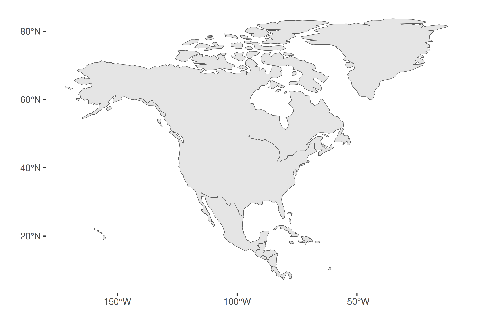
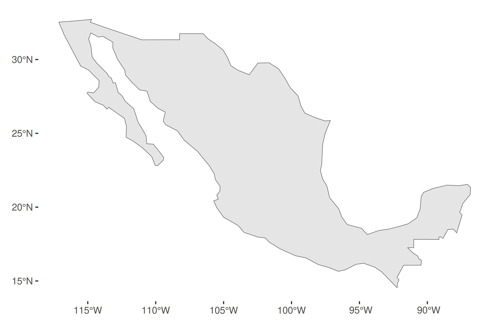
Adding data to a map
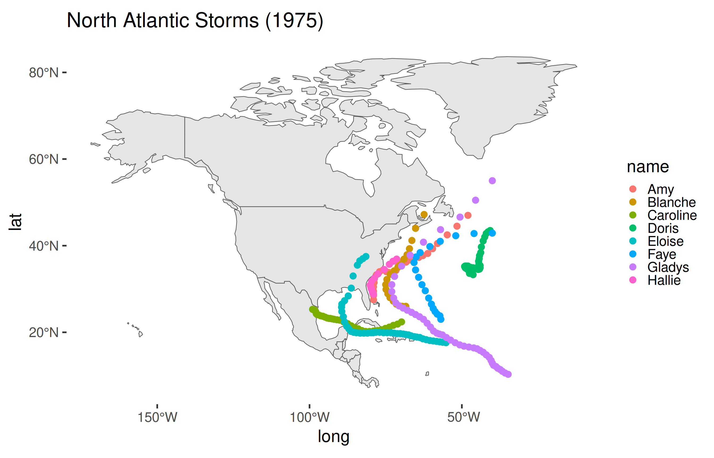
storms75 <- storms |> filter(year == 1975)
ggplot() +
geom_sf(data = map_north_america) +
geom_point(data = storms75, size = 0.5,
aes(x = long, y = lat, group = name, color = name)) +
geom_path(data = storms75,
aes(x = long, y = lat, group = name, color = name)) +
theme(panel.background = element_blank()) +
labs(title = "North Atlantic Storms (1975)")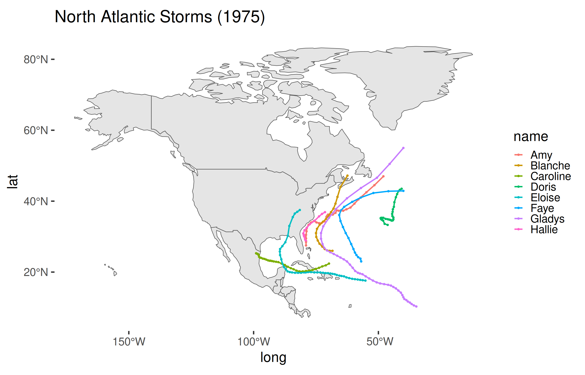
world_countries <- ne_countries(scale = "medium", returnclass = "sf")
storms75 <- storms |> filter(year == 1975)
ggplot() +
geom_sf(data = world_countries) +
coord_sf(xlim = c(-110, 0), ylim = c(5, 65)) +
geom_path(data = storms75,
aes(x = long, y = lat, group = name, color = name)) +
facet_wrap(~ year, nrow = 2) +
theme(panel.background = element_blank(),
axis.ticks = element_blank(), # hide tick marks
axis.text = element_blank()) + # hide degree values of lat & lon
labs(title = "North Atlantic Storms (1975)",
x = "",
y = "")